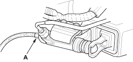

- Bleed the clutch hydraulic system.
- Attach a hose to the bleeder screw (A), and suspend the hose in a container of brake fluid.
- Make sure there is an adequate supply of fluid at the clutch master cylinder, then slowly pump the clutch pedal until no more bubbles appear at the bleeder hose.
- Tighten the bleed screw to 8 Nm (0.8 kgf/m, 6 lbf/ft); do not overtighten it.
- Refill the clutch master cylinder with fluid when done.
- Always use only Genuine Honda DOT 3 or 4 brake fluid.
